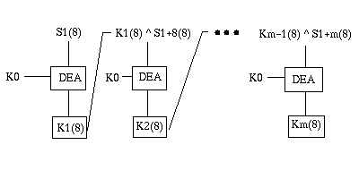

MESAJ ONAYLAMA
Bir bilgisayardan diğerine gönderilen bilginin değişmediğini anlamak için kullanılan bu algoritmada en önemli özellik "iletişim" anahtarı ile mesajın belli bölümlerinin şifrelenerek mesaj sonuna eklenmesidir. Bu işlemde "iletişim" anahtarı, ve mesajın şifrelenen bölümleri yalnız ilgili programlar tarafından bilindiği için, mesaj açık ta olsa mesajın özellikle parasal bilgisinde bir oynama yapılamaz veya yetkisiz bir kullanıcı gerçek mesaj gibi onay merkezine bilgi gönderemez. Bu yöntem güvenli olduğu için pekçok ATM (para çekme cihazları) tarafından kullanılır.
Burada yöntemin özellikleri ve iki bilgisayar arasındaki "iletişim" anahtarı değişimi anlatılmıştır.
Bir bilgisayar diğerine bağlantı kurarken önce iletişim anahtarını gönderir. Diğer bilgisayar gelen iletişim anahtarını sakladığı anahtar ile karşılaştırır. İletişim anahtarı doğru ise, iletişim anahtarını değiştirme yetkisi olan bilgisayar (genelde merkez bilgisayardır) rastgele sayı üreteci kullanarak yeni bir iletişim anahtarı oluşturur. Mesaj alındısına yeni iletişim anahtarını yazar ve ilk oturumu kuran bilgisayara bu anahtarı gönderir. Karşı taraf mesajı alınca iletişim anahtarının şifresini açar ve bu anahtarı bundan sonraki mesaj onaylama işlemlerinde kullanmak üzere saklar. Burada bir önceki oturumdan saklanmış olan iletişim anahtarı bir sonraki oturumu başlatmakta kullanılır. Oturum başladıktan sonra yeni iletişim anahtarı outurum boyunca kullanılır. Bir sonraki oturumun ilk mesajında kullanılmak üzere saklanır. İletişim anahtarının rastgele değişmesi mesaj onay kodu hesaplamada programı yazan kişilerin bile mesajın içeriğini değiştirme olanağını ortadan kaldırır.
Mesaj onay kodu hesaplanırken mesajın her iki bilgisayar programı tarafından bilinen belirli bölümleri bir diziye taşınır. Bu dizi o anki "iletişim" anahtarı değeri ile şifrelenir. DEA bir seferde ençok sekiz byte şifreleyebilir. Her sekiz byte şifrelendiğinde bir sonraki sekiz byte ile EXOR yapılır. İşlemlerden elde edilen son sekiz byte mesaj onay kodudur. Bu bilginin ilk dört byte'lık bölümü onaltılık yazılabilir sayı biçimine dönüştürülür ve işlevi çağıran programa gönderilir. Bu program mesaj onay kodunu 8 byte olarak mesajın sonuna ekler ve karşı tarafa iletir.
Mesajı alan bilgisayar aynı bilgi alanlarından oluşturduğu diziyi kendinde saklı olan iletişim anahtarı ile aynı yöntemi kullanarak şifreler ve mesaj onay kodu elde eder. Elde edilen mesaj onay kodunu karşı taraftan gelen mesaj onay kodu ile karşılaştırır. Bilgiler eşit ise mesaj alındısı doğru olarak ilk bilgisayara iletilir. Hata varsa mesajın kabul edilmediği belirtilir ve oturum kapatılır.
Bu yöntem, halka açık iletişim şebekelerinden (X.25, Telefon şebekesi gibi) mesaj alış verişi yapan kurumlar tarafından kullanılır. Özellikle parasal nitelik taşıyan mesajlarda, iletişim anahtarı sayesinde bilginin doğru bilgisayardan gelip gelmediği kolaylıkla anlaşılır.
İletişim anahtarının mesaj onay kodu üretiminde nasıl kullanıldığı aşağıdaki çizimde gösterilmiştir. Bu çizimdeki k0 iletişim anahtarı km ise mesaj onay kodudur.
Mesaj onay kodunun hesaplandığı dizi iki yöntemle mesaj onay kodu üretimine sokulur. Birinci yöntemde dizideki boşluklar kaldırılır. Alfabetik bilgi dizinin başına taşınır, dizinin sonuna sekizin katlarını tamamlayacak biçimde '0' taşınır. İkinci yöntemde dizinin içeriği bozulmadan şifrelenir.
 Çizimdeki km değerinin ilk 4 byte'lık bölümünün hex karşılığı 8 onaltılık sayı olarak, mesaj onay kodu biçiminde ilgili programa geri döndürülür.
Aşağıdaki örnek program her iki yöntemin de kolaylıkla kullanıldığı bir C dili kodlamasıdır.
ÖRNEK PROGRAM
Buradaki örnek programda işleri kolaylaştırmak için iletişim anahtarı yerine değişmez bir değer kullanılmıştır.
char *comkey = "2222222222222222";
msgauth(matype,s,nn,p)
char matype,*s, *p;
int nn;
{
int n,i,k,m,l;
char savrep[16];
char s1[148];
char px[20];
n = nn;
if(matype == COMPRESS) {
l = i = 0;
while(i < n) {
i = skipblank(s,i,n); /* bosluklari atla */
k = searchblank(s,i,n) + 1; /* ilk bosluga kadar gec */
memcpy(s1 + l,s + i, k - i); /* ascii karakter tasi */
l += k - i;
i = k;
}
}
else
if(matype == PLAINTXT) {
memcpy(s1,s,n);
l = n;
}
/* sekizin katlarına tamamla */
if((n % 8) != 0) n = (n / 8 + 1) * 8;
for(i = l-1; i < n; i++)
s1[i] = '0'; /* mesajın sonuna '0' doldur */
s1[n] = 0;
for(i = 0; i < 8; i++)
savrep[i] = 0;
/* iletişim anahtarı ile her sekiz byte bilgiyi şifrele */
m = 8;
memcpy(ppk.key,comkey,16);
for(i = 0; i < n; i += 8) {
memcpy(ppk.txt,s1 + i,8);
/* bir önceki sekiz byte ile EXOR yap */
for(k = 0; k < 8; k++)
ppk.txt[k] = ppk.txt[k] ^ savrep[k];
ppk.len = 8;
ppk.type = '0';
/* DEA ile şifrele */
deasub(&ppk);
/* şifrelenmiş bilgiyi tasi */
strncpy(savrep,ppk.txt,8);
}
/* ilk dört byte bilgiyi hex sayiya donustur */
for(k = 0; k < 8; k++)
sprintf(px + (k << 1), "%02X", ppk.txt[k] & 0377);
/* sonucu tasi */
memcpy(p,px,8);
}